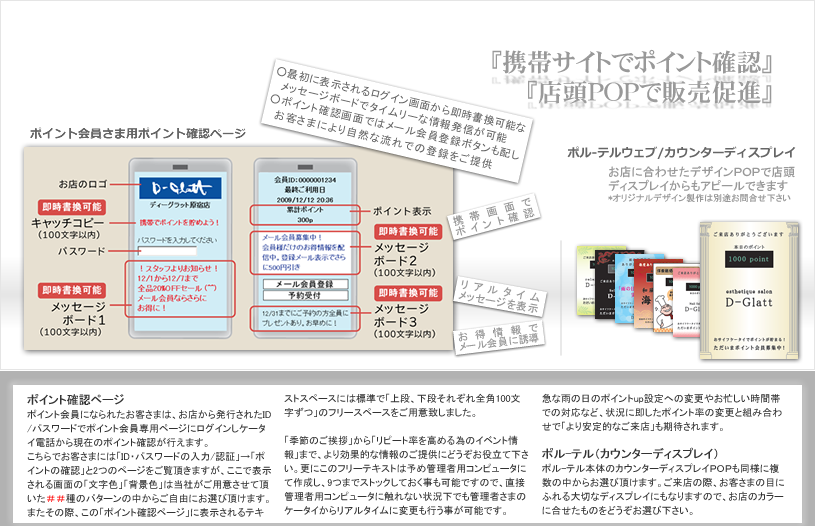

<!DOCTYPE html PUBLIC "-//W3C//DTD XHTML 1.0 Transitional//EN" "http://www.w3.org/TR/xhtml1/DTD/xhtml1-transitional.dtd">
<html xmlns="http://www.w3.org/1999/xhtml">
<head>
<meta http-equiv="Content-Type" content="text/html; charset=utf-8" />
<meta http-equiv="X-UA-Compatible" content="IE=EmulateIE7" />
<title>ＰＯＰなど</title>
<link href="porter_web.css" rel="stylesheet" type="text/css"  media="screen" />
<link href="porter_web_p.css" rel="stylesheet" type="text/css"  media="print" />
<style type="text/css">
<!--
a:link {
	text-decoration: none;
}
a:visited {
	text-decoration: none;
}
a:hover {
	text-decoration: none;
}
a:active {
	text-decoration: none;
}
-->
</style>
<link href="jq_navi.css" rel="stylesheet" type="text/css"  media="all" />
<meta name="description" content="携帯サイトでポイント確認、てんとうPOPで販売促進" /><meta name="keywords" content="ポル-テルウェブ,Felica,ケータイ,POS連動,UP,アップ,point,ポイント,集客,システム,簡単" />
<!--google関連src 2014/10/04から↓-->
<script type="text/javascript" src="http://www.cokes.jp/js/google20141004.js"></script>
</head>


<body>
<div id="wrapper">
<div id="container">
<div class="b_L_bgimg" id="leftcont"><em>当システムは、おサイフケータイ、PASMO、Suica等が採用しているICカード（フェリカチップ）のICカードNo.をリーダーで読取り、サーバー上でポイントを付与します。<br />
  上記媒体からそれ以外の情報取得・書き込みは一切行われません。</em></div>
<div id="centercont">
<!--<div class="menu">
        <div class="menuhead1">
        <div id="menu1" onMouseOver="MenuOn(1)" onMouseOut="MenuOff(1)"> <a href="a_01.html" class="menuhead1">　</a></div>
        <div id="menu2" onMouseOver="MenuOn(2)" onMouseOut="MenuOff(2)"> <a href="a_01.html" class="menuhead2">　</a>
          <div class="submenu" id="submenu2">
          <a href="a_01.html">a_01</a> <span>|</span>
          <a href="a_02.html">a_02</a> <span>|</span>
          <a href="a_03.html">a_03</a> <span>|</span>
          <a href="a_04.html">a_04</a></div>
        </div>
        <div id="menu3"onMouseOver="MenuOn(3)" onMouseOut="MenuOff(3)"> <a href="b_01.html" class="menuhead3">　</a>
          <div class="submenu" id="submenu3">
          <a href="b_01.html">b_01</a> <span>|</span>
          <a href="b_02.html">b_02</a> <span>|</span>
          <a href="b_03.html">b_03</a></div>
        </div>
        <div id="menu4"onMouseOver="MenuOn(4)" onMouseOut="MenuOff(4)"> <a href="c_01.html" class="menuhead4">　</a>
        <div class="submenu" id="submenu4"> <a href="c_01.html">c_01</a></div>
    </div>
    <div id="menu5"onMouseOver="MenuOn(5)" onMouseOut="MenuOff(5)"> <a href="d_01.html" class="menuhead5">　</a>
        <div class="submenu" id="submenu5"> <a href="d_01.html">d_01</a> <span>|</span> <a href="d_02.html">d_02</a></div>
    </div>
    <div id="menu6"onMouseOver="MenuOn(6)" onMouseOut="MenuOff(6)"> <a href="e_01.html" class="menuhead6">　</a>
        <div class="submenu" id="submenu6"> <a href="e_01.html">e_01</a> <span>|</span> <a href="e_02.html">e_02</a> <span>|</span> <a href="e_03.html">e_03</a> </div>
    </div>
    </div></div>-->
<ul class="menu">
    <li><a href="a1.html">ポル-テルウェブとは</a>
        <ul class="sub">
            <li><a href="a2.html">ポル-テルウェブの特徴</a></li>
<!--            <li><a href="a3.html">サブメニューA</a></li>
            <li><a href="a4.html">サブメニューA</a></li>-->
        </ul>
    </li>
    <li><a href="b1.html" class="menu_now">お客さまの要望</a>
        <ul class="sub">
            <li><a href="b2.html">POP</a></li>
<!--             <li><a href="b3.html">POP</a></li>
           <li><a href="b4.html">サブメニューB</a></li>-->
        </ul>
    </li>
    <li><a href="c1.html">システム</a>
        <ul class="sub">
            <li><a href="c2.html">管理画面</a></li>
            <li><a href="c3.html">利用フロー</a></li>
<!--            <li><a href="c4.html">サブメニューC</a></li>-->
        </ul>
    </li>
        <li><a href="d1.html">製品仕様</a>
        <ul class="sub">
<!--            <li><a href="d2.html">サブメニューD</a></li>
            <li><a href="d3.html">サブメニューD</a></li>
            <li><a href="d4.html">サブメニューC</a></li>-->
        </ul>
    </li>
        <li><a href="e1.html">機能詳細</a>
        <ul class="sub">
<!--            <li><a href="e2.html">サブメニューD</a></li>
            <li><a href="e3.html">サブメニューD</a></li>
            <li><a href="e4.html">サブメニューC</a></li>-->
        </ul>
    </li>
        <li><a href="f1.html">ＴＶＲサービス</a>
        <ul class="sub">
<!--            <li><a href="f2.html">サブメニューD</a></li>
            <li><a href="f3.html">サブメニューD</a></li>
            <li><a href="f4.html">サブメニューC</a></li>-->
        </ul>
    </li>
</ul>

<!--<div =id "clear"></div>-->


<div id="main_stage_H370">
  <h1><em>『携帯サイトでポイント確認』『店頭POPで販売促進』</em></h1>
      <p><em>○最初に表示されるログイン画面から即時書換可能なメッセージボードでタイムリーな情報発信が可能　　
○ポイント確認画面ではメール会員登録ボタンも配しお客さまにより自然な流れでの登録をご提供<br />
<br />
ポル-テルウェブ/カウンターディスプレイ
お店に合わせたデザインＰＯＰで店頭ディスプレイからもアピールできます
*オリジナルデザイン製作は別途お問合せ下さい</em></p>
      </div>
  
  <div id="sub_stage"><div class="3col" id="sub_inner"><div class="font10px"><span class="font10px"><strong>ポイント確認ページ</strong></span><br />
    <br />
    ポイント会員になられたお客さまは、お店から発行されたID/パスワードでポイント会員専用ページにログインしケータイ電話から現在のポイント確認が行えます。<br />
    こちらでお客さまには「ID・パスワードの入力/認証」→「ポイントの確認」と2つのページをご覧頂きますが、ここで表示される画面の「文字色」「背景色」は当社がご用意させて頂いた＃＃種のパターンの中からご自由にお選び頂けます。<br />
    またその際、この「ポイント確認ページ」に表示されるテキストスペースには標準で「上段、下段それぞれ全角100文字ずつ」のフリースペースをご用意致しました。
    <p>「季節のご挨拶」から「リピート率を高める為のイベント情報」まで、より効果的な情報のご提供にどうぞお役立て下さい。更にこのフリーテキストは予め管理者用コンピュータにて作成し、9つまでストックしておく事も可能ですので、直接管理者用コンピュータに触れない状況下でも管理者さまのケータイからリアルタイムに変更も行う事が可能です。<br />
    急な雨の日のポイントup設定への変更やお忙しい時間帯での対応など、状況に即したポイント率の変更と組み合わせで「より安定的なご来店」も期待されます。<br />
    </p>
    <p><br />
      <span class="font10px"><strong>ポル-テル（カウンターディスプレイ）</strong></span><br />
      <br />
      ポル-テル本体のカウンターディスプレイＰＯＰも同様に複数の中からお選び頂けます。ご来店の際、お客さまの目にふれる大切なディスプレイにもなりますので、お店のカラーに合せたものをどうぞお選び下さい。<br />
      <br />
      </p>
  </div>
  </div>
  </div>
<div id="footer">
  <p>
<map name="Map" id="Map"><area shape="rect" coords="274,3,315,18" href="company.html" target="_self" alt="会社概要" />
<area shape="rect" coords="332,3,397,18" href="service_jq.html" target="_self" alt="お問合せ" />
<area shape="rect" coords="412,3,465,18" href="sitemap.html" target="_self" alt="サイトマップ" />
<area shape="rect" coords="482,4,544,19" href="policy.html" target="_self" alt="サイトポリシー" />    </map>
  </p><div id="next" title="NEXT PAGE"><a href="c1.html" target="_self"></a></div>
</div>
</div>
<a href="index2.html" class="b_R_bgimg" id="rightcont" title="トップページヘ"><em>copyright(C) D-glatt.Co.LTD.1989-2009.All right reserved.</em></a></div>

<!--↓googleサイト内検索ウインドウ用js↓-->
<!--<input type="hidden" value="対象ドメイン名" name="as_sitesearch" />
<form action="http://www.google.com/search" target="_top">
<input type="hidden" name="hl" value="ja" />
<input type="hidden" name="ie" value="Shift_JIS">
<input type="hidden" name="oe" value="Shift_JIS">
<input type="hidden" value="www.d-glatt.co.jp" name="as_sitesearch" />
<input type="text" name="q" size="31" maxlength="256" value="" />
<input type="submit" name="btnG" value="検索" />
</form>-->
<!--↑googleサイト内検索ウインドウ用js↑-->

</div>


<!--↓google-analytics用js↓-->
<script type="text/javascript">
var gaJsHost = (("https:" == document.location.protocol) ? "https://ssl." : "http://www.");
document.write(unescape("%3Cscript src='" + gaJsHost + "google-analytics.com/ga.js' type='text/javascript'%3E%3C/script%3E"));
</script>
<script type="text/javascript">
try {
var pageTracker = _gat._getTracker("UA-11799815-1");
pageTracker._trackPageview();
} catch(err) {}</script>
<!--↑google-analytics用js↑-->


<script type="text/javascript" src="jquery-1.3.2.js" ></script>
<script type="text/javascript" src="script.js"></script>
<script type="text/javascript" src="multicol.min.js"></script>
<script type="text/javascript" src="col.js"></script>


</body>
</html>
